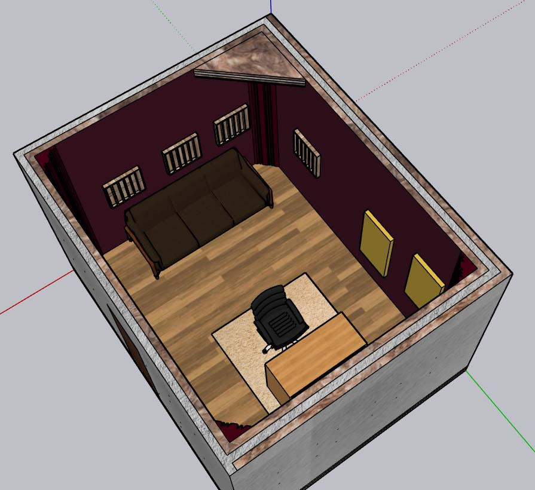
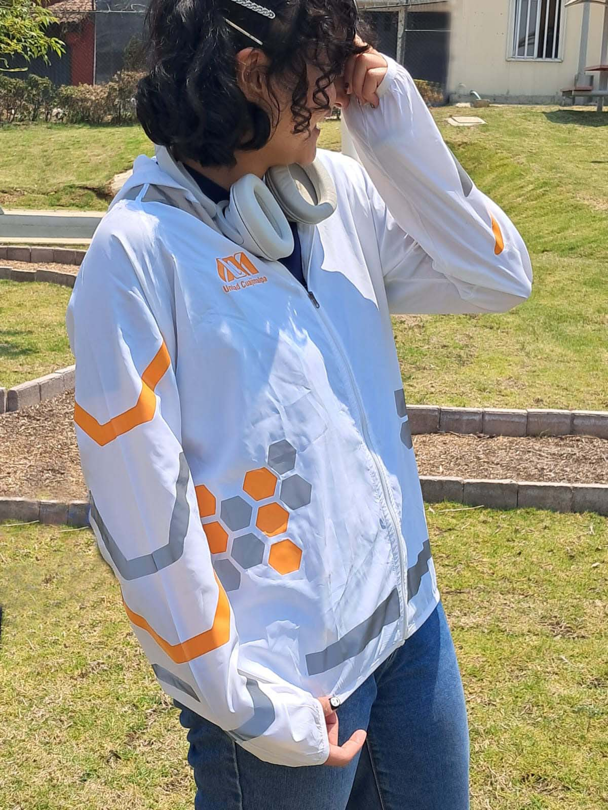
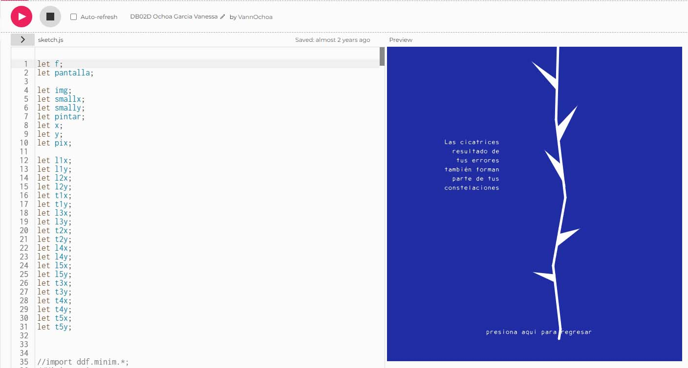
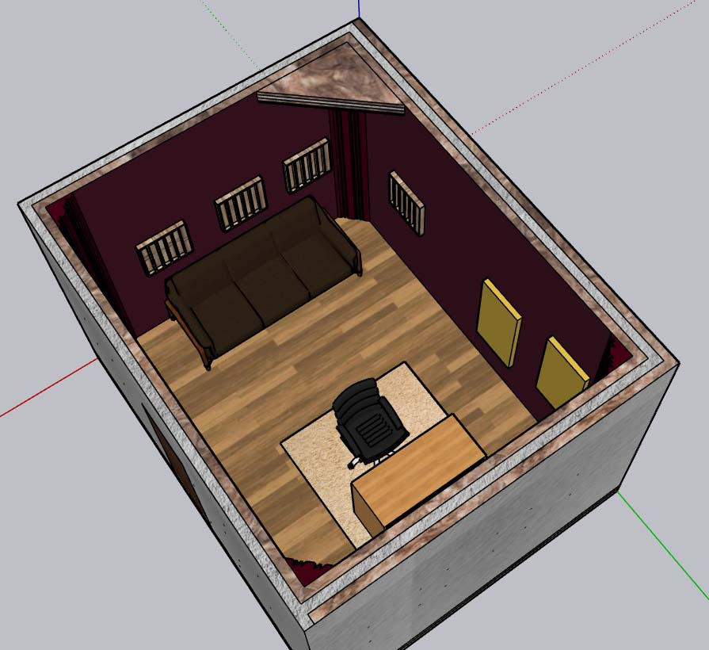
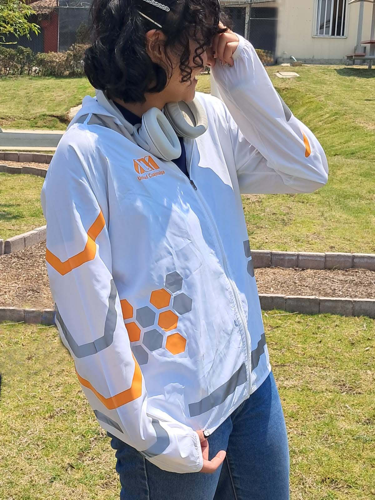
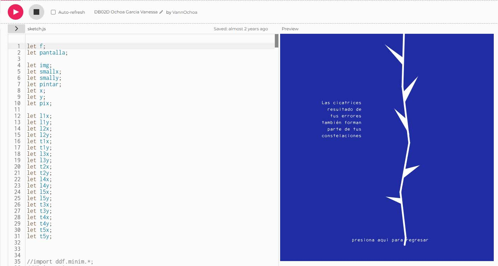

Soy diseñadora con formación en la UAM, unidad Cuajimalpa, e ingeniera por parte de la ESIME Zacatenco del IPN. Mis principales áreas de desarrollo son el diseño de espacios y el diseño audiovisual, abordados desde una perspectiva centrada en la acústica y la experiencia sonora. Además, tengo un especial interés en el diseño editorial y el diseño de la información
Como profesional, mi objetivo es desarrollar marcos teórico-prácticos para investigar y resolver problemáticas sonoras complejas. Para ello, combino metodologías de ingeniería, diseño crítico y ciencias sociales, con el fin de generar conocimiento aplicable. Busco que instituciones, empresas y equipos multidisciplinarios comprendan el sonido no solo como una variable técnica, sino como un fenómeno socio-cultural con implicaciones en equidad, educación y sostenibilidad.
 




